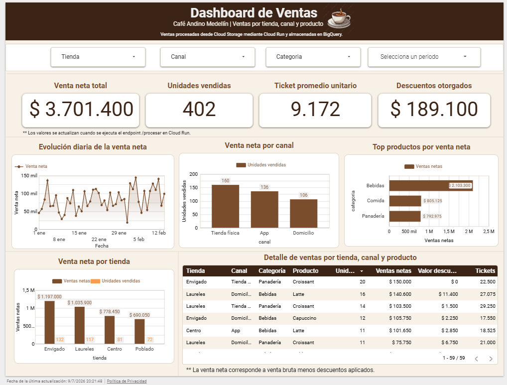
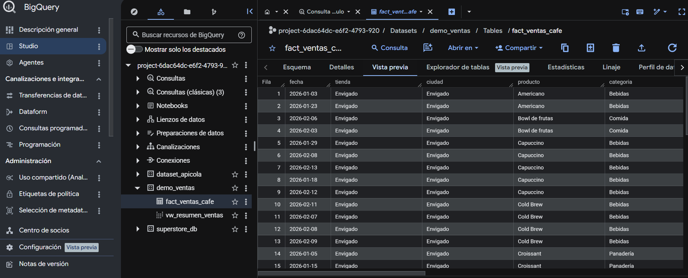
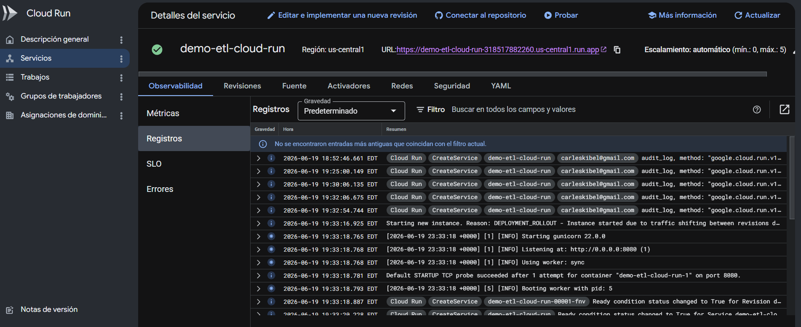

Proyecto publicado
Pipeline de datos en Google Cloud
Flujo ETL desde un archivo de origen hasta BigQuery y la visualización de indicadores en Looker Studio.
Cloud Storage · Cloud Run · BigQuery · Python · Looker Studio
Ver caso de estudio →ANÁLISIS DE DATOS · CLOUD · AUTOMATIZACIÓN
Portafolio de proyectos construidos con Python, Power BI, Google Cloud, Azure y herramientas de automatización.
PORTAFOLIO
Proyecto publicado
Flujo ETL desde un archivo de origen hasta BigQuery y la visualización de indicadores en Looker Studio.
Cloud Storage · Cloud Run · BigQuery · Python · Looker Studio
Ver caso de estudio →En preparación
Modelo para analizar escenarios de demanda, costos, rendimiento y riesgo.
Python · Pandas · NumPy · Plotly
En preparación
Proceso automatizado de consolidación, validación y clasificación de errores.
Python · Pandas · Pathlib · CSV
En preparación
Modelo de datos, indicadores y visualizaciones para apoyar decisiones.
Power BI · Power Query · DAX
CASO DE ESTUDIO 01
Implementación de un flujo para recibir datos, procesarlos automáticamente, almacenarlos en BigQuery y consumirlos desde un dashboard.
La información de ventas se encontraba en archivos separados y requería procesamiento manual antes de poder analizarse. Esto aumentaba el tiempo de preparación y dificultaba mantener un proceso reproducible.
Se desarrolló un proceso ETL en Python desplegado en Cloud Run. El archivo se recibe desde Cloud Storage, se transforma, se carga en BigQuery y posteriormente se consume desde Looker Studio.
ARQUITECTURA



PERFIL
Soy analista de datos con experiencia en visualización, automatización y mejora de procesos. Me interesa diseñar soluciones simples, trazables y útiles para el negocio, mientras profundizo en ingeniería de datos y plataformas cloud.